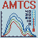

The AMTCS system is a laboratory automation solution that brings together temperature control and spectroscopic measurements into a single workflow. Using a C++-based user interface application and an embedded PLC (Python-based logic on a Raspberry Pi 5), it integrates and coordinates devices from different suppliers, automating temperature ramps, stabilisation at a target temperature, and spectrum acquisition. This reduces manual intervention, minimises errors, and improves the reliability and repeatability of experiments. The system has been successfully validated under real laboratory conditions.